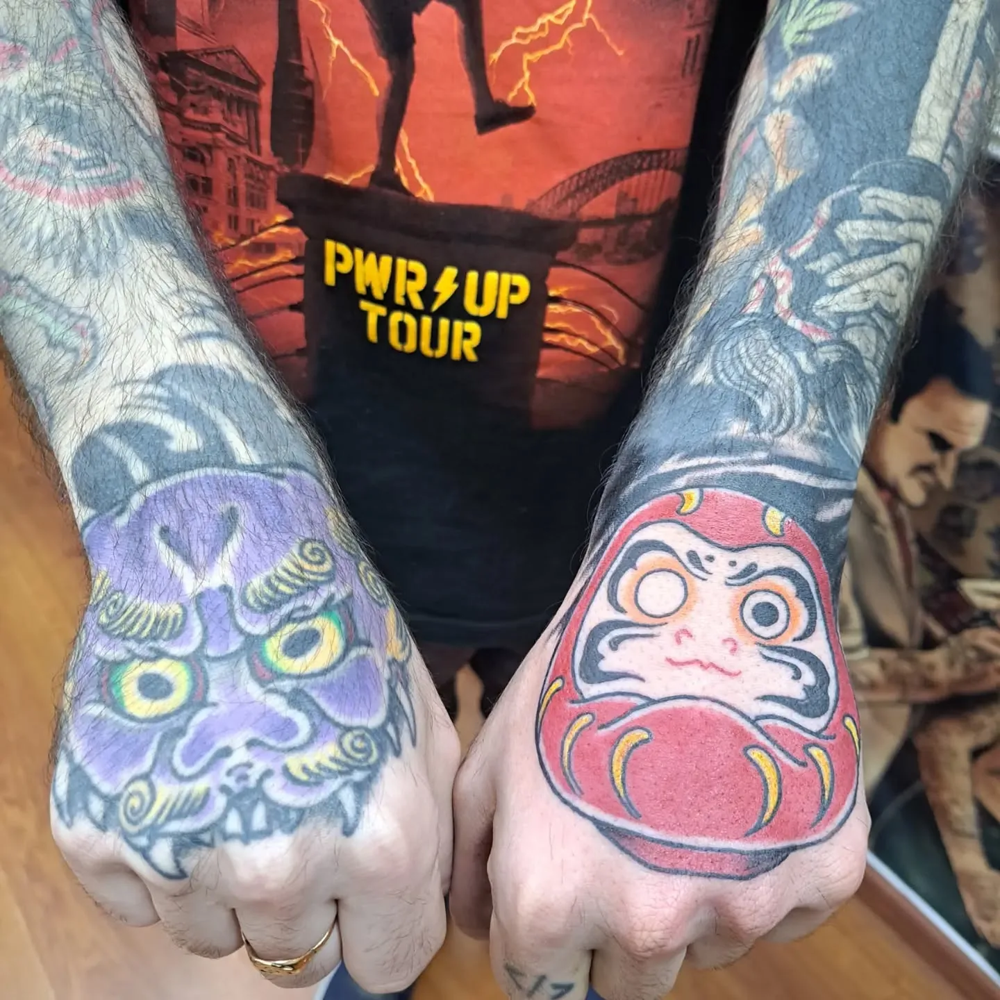
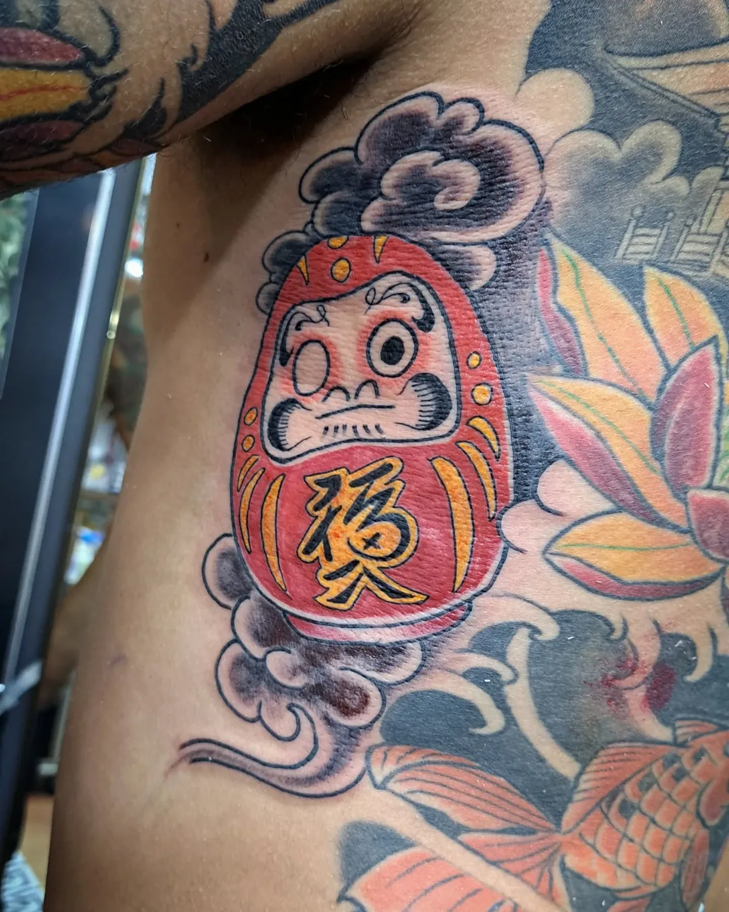

Sean
Eternos
Estudio de tatuajes en Caballito.
Un diseño único para tu proyecto.


Trabajos en la piel
Una selección de tatuajes del estudio. Elegí una imagen para verla en detalle.


Un diseño para vos
Cada proyecto parte de tu idea y tus referencias. El estudio prepara un diseño único.
Tatuajes personalizados
Un diseño único por proyecto.
Color y japonés
Dos estilos que forman parte del trabajo del estudio.
Cover-up y freehand
Proyectos de cobertura y diseños a mano alzada.
Retratos de mascotas
Tu mascota como motivo del tatuaje.
Piezas chicas
Diseños en pequeño formato.
El estudio
Sean Eternos es un estudio privado de tatuajes en Caballito, fundado en 2014.
Artistas: @gsctattoo y @canibrizuela.
Sean Eternos en InstagramEn Caballito
Juan B. Ambrosetti 289
Caballito, CABA
Dirección publicada en su ficha. El estudio indica que la dirección exacta se envía después de la seña.
Ver ubicación en el mapaHorarios
- Lunes a viernes
- 10:00–20:00
- Sábados
- 11:00–19:00
Horarios de la ficha verificada el 23/10/2026. La descripción del estudio informa lunes a sábado de 11:00 a 20:00. Confirmá el horario de tu cita.
Teléfono: +54 9 11 6201-0973